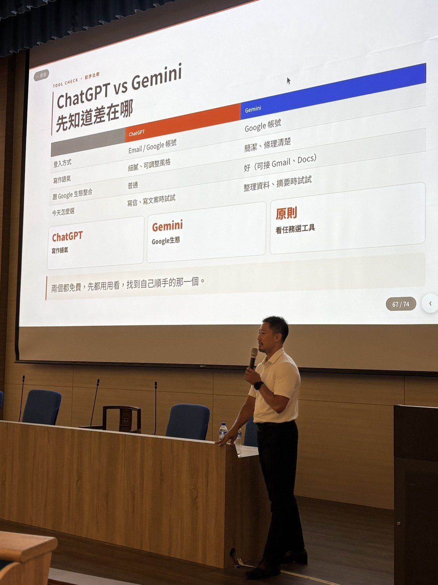
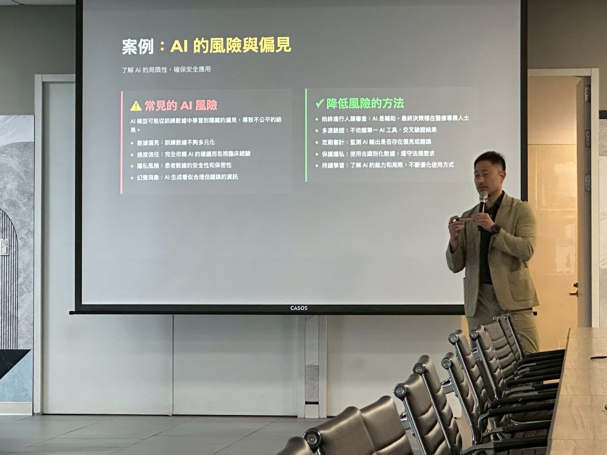
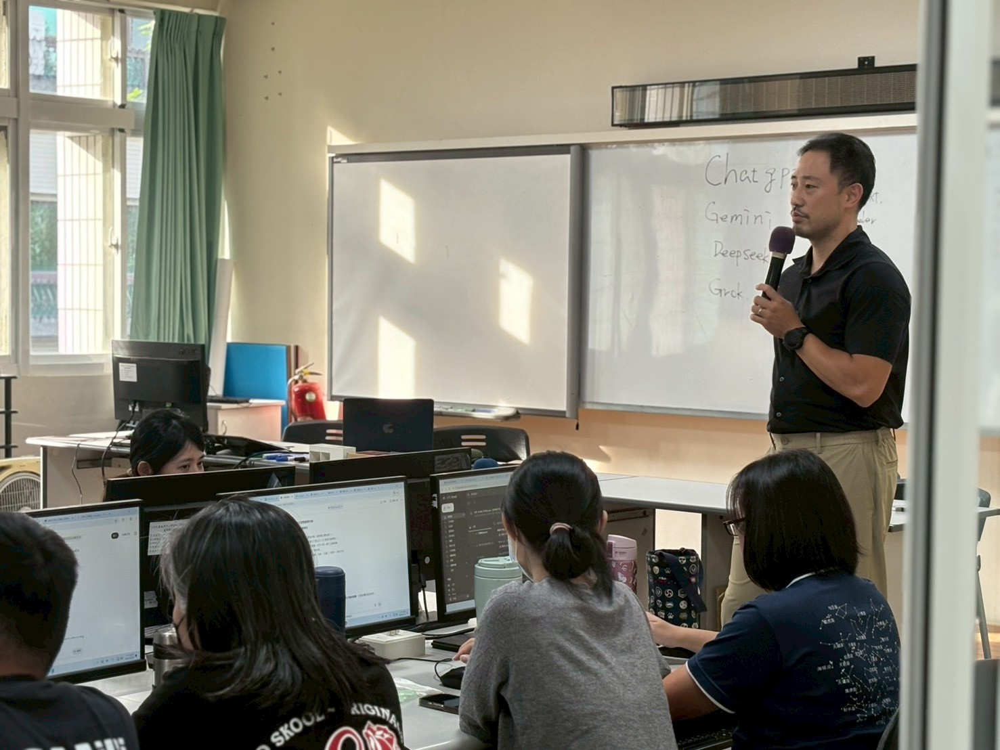

業務與營運
客戶研究、詢價信整理、產品資料與報表準備。
企業 AI 講師 · 季祥 Simon
從每天正在處理的任務開始。先把問題看清楚，再讓學員親手操作，最後一起檢查結果能不能帶回工作中使用。
業務想更快準備客戶資料，行政想少花時間整理文件，主管關心資料能不能安心使用。課前先了解大家手上的任務，課堂案例才會貼近工作。
學員不必先懂技術。帶一項熟悉的工作來，就能開始練習怎麼讓 AI 幫上忙。
客戶研究、詢價信整理、產品資料與報表準備。
郵件回覆、會議紀錄、文件彙整與知識查找。
流程選擇、資料界線、權限與導入風險判斷。
先理解，再操作
一個好用的 AI 流程，通常從幾個簡單問題開始。想清楚之後，提示語才會有方向，結果也比較容易檢查。
這項工作最後要交出什麼？誰會使用？
哪一個步驟最花時間，或最容易出錯？
哪些資料可以提供給 AI？哪些需要留在公司內？
完成後要怎麼核對，才知道結果能使用？
每個任務先用約 10–15 分鐘說明，接下來留時間讓學員練習、提問與檢查成果。操作時老師會在現場協助。
講師示範情境、工具與完成目標。
約 10–15 分鐘確認資料、使用者與檢查標準。
先想好再開始用自己的工作情境，做出第一版成果。
課堂主要時間檢查正確性、風險與可重複步驟。
帶回工作接著用依學員背景和課前訪談，從合適的主題組合出發。內容可以先建立基本操作，也可以直接從部門流程開始。
下指令、拆解任務、提供背景、設定輸出格式，建立可持續調整的工作方式。
在 Gmail、Docs、Drive 和 NotebookLM 中整理資訊、查找資料與形成初步成果。
以客戶研究、文件比對、表格整理、課程備課等實際任務練習 AI 協作。
辨識來源、核對重要內容，了解哪些資料不該貼上，以及何時要找 IT 確認。
曾在企業、醫療、教育與政府單位帶領 AI 培訓。每次課前先了解對象與工作情境，再挑選適合的案例。

AI 基本素養、工具選擇與資料安全判斷。

從醫療現場工作需求討論 AI 應用。

用 AI 協助內容規劃與日常文字工作。
其他授課與合作單位：國家運動訓練中心、磊山保經、東吳大學、安樂高中、博幼社會福利基金會等。
我在 HP、趨勢科技累積企業 IT、雲端與大數據專案經驗，後續參與外商 AI 與健康應用專案。現在把過去在企業系統、專案管理和 AI 應用上的經驗，帶進不同產業的課堂。
我希望同仁離開教室時，除了知道工具怎麼操作，也能判斷手上的任務該怎麼拆、資料怎麼提供，以及結果要如何核對。
START WITH A CONVERSATION
提供活動日期、參加對象和目前最想改善的工作情境，我們可以一起討論適合的課程方式。
寫信討論合作 Simonchi0224@gmail.com